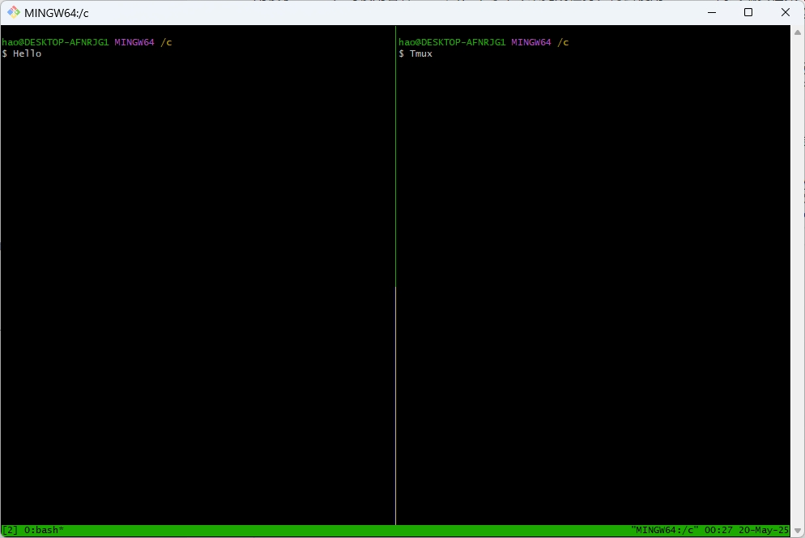

Windows下Git Bash 使用Tmux
文章目录
为何要这样做？
用惯了Linux，习惯用各种find、grep等命令来完成任务，再去使用Windows的终端实在太难受了。尤其是它的 Tab 逻辑是直接选一个文件，而不是把可能的选项列出，用起来非常不好用。因为我的Windows装了 Git，所以可以使用 Git 的 Bash 。虽然这个终端反应有点慢，但起码能用得顺手。而在用 Linux 时，我还喜欢使用 Tmux 来运行多个窗口。
默认 Git Bash 并没有 Tmux，网上找到的方法是去下载 MYSYS2 的发行版，然后在发行版中通过命令安装 Tmux。再从目录中把 Tmux.exe 和相关 dll 拷贝到 Git Bash 的办法来安装 Tmux。感觉略显麻烦，下面说一下我的办法。
操作
下面说到文件版本，可能会在不同时期可能版本后会有所差异，找不到下面的版本，就用同名最新的就好
打开网页 https://repo.msys2.org/msys/x86_64/，下载 tmux-3.3.a-1-x86_64.pkg.tar.zst 和 libevent-2.1.12-4-x86_64.pkg.tar.zst。然后分别把包中的tmux.exe 和 msys-event_core-2-1-7.dll 拷贝到 Git Bash 的 bin 目录。我的路径是 C:\Program Files\Git\usr\bin。这样在 Git Bash 上运行 Tmux 了 
其他问题
刚开始使用时，进入 Tmux 后可能使用 clear 命令会出现如下提示
|
|
这个问题只需正确设置环境变量
|
|
完成后激活一下，或者重新在 Tmux 中打开 Shell，现在 clear 就不会报错了
文章作者 hao
上次更新 2025-05-19